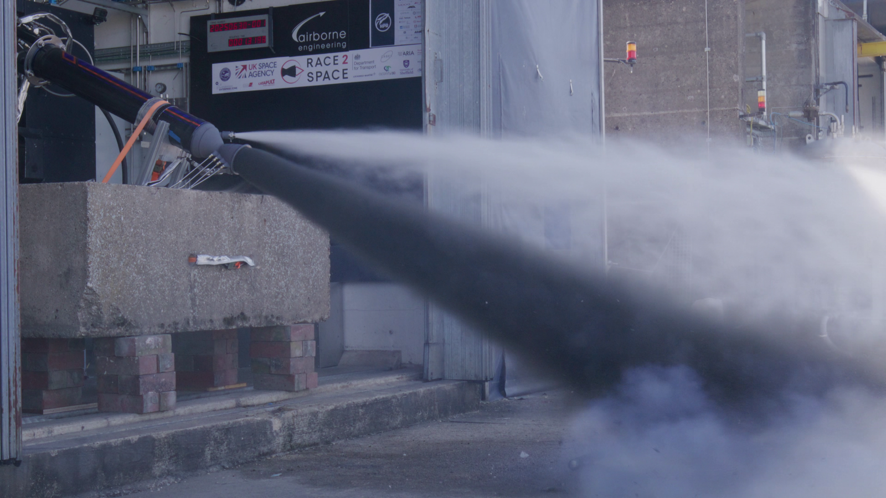
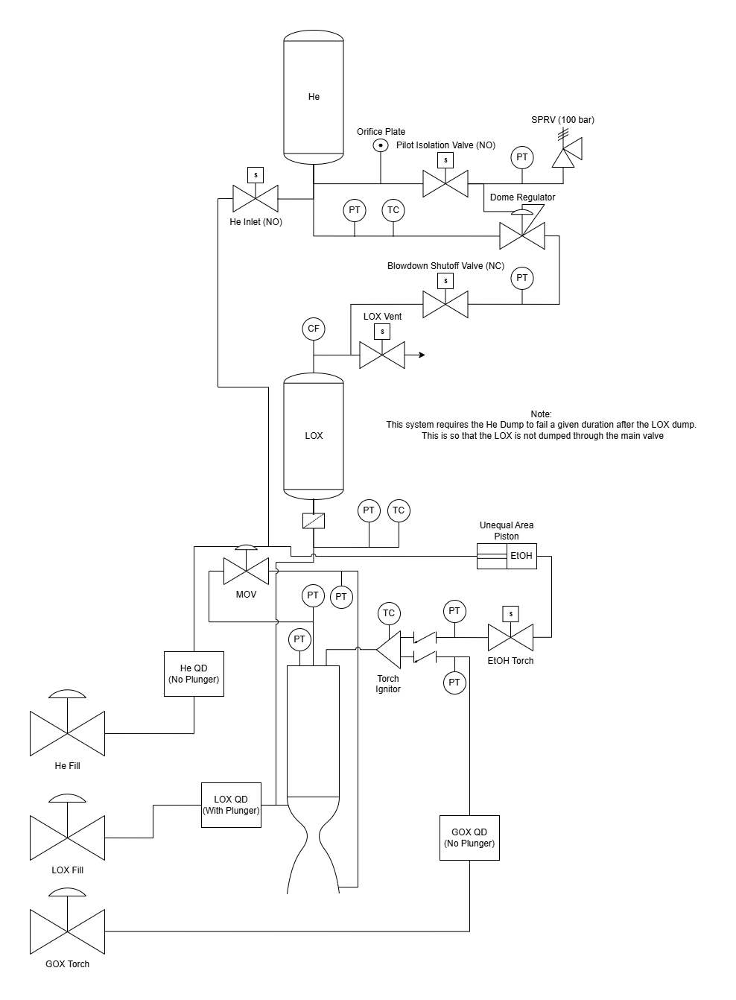

Back to Projects
Solaris Mk III Testing & LOX Feed Systems
Race2Space UK propulsion competition
- 10 kN LOX-paraffin hybrid rocket engine
- Team size: 6
My Role
- Supported mechanical assembly of the engine
- Assisted with sensor selection and mechanical integration
- Assembled fluid-facing hardware, including sensors and plugs, using documented procedures
- Supported test campaign preparation and observed hot-fire testing conducted by Airborne Engineering Ltd
This work provided first-hand exposure to LOX handling, cryogenic safety, and large-scale propulsion test operations. I did not own engine design.

Helium-Boosted LOX Feed System
Following the Solaris Mk III test campaign, I began contributing to the early design of a helium-pressurized LOX feed system for a high-altitude rocket targeting a 100,000 ft apogee.
Scope
- Systems-level design and integration support
- Early architecture and requirements work within a multidisciplinary team
My Contributions
- Produced P&ID diagrams defining LOX and helium pressurization architecture
- Evaluated components suitable for higher-pressure LOX feed systems
- Supported design iteration and integration planning
- Collaborated with propulsion engineers to define requirements
This work focused on fluid architecture and system definition, not detailed component ownership.
